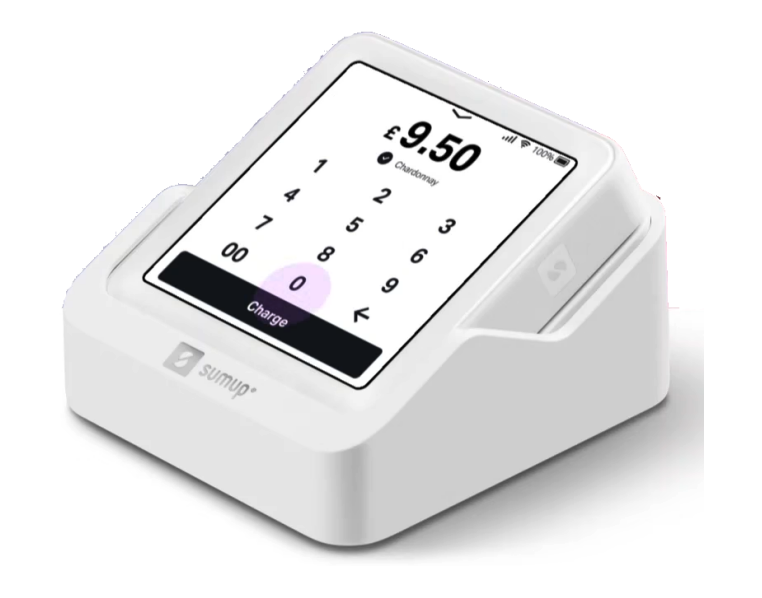

Fundraising
We are very grateful to those whose generous donations mean we are just able to cover our costs at present./p>
Cash and Regular Donations
To run the church currently costs £140 per day, or £51,000 per year. The average weekly giving per person is as follows:
- St. Helen’s – £10.15
- Diocese of York – £10.00
- National – £13.00
Donations can always be made in church, via the collection plate. However, if you are able to support St. Helen’s on a regular basis, we would be very grateful. This can be done using a standing order. If you are a UK tax payer, you can increase your gift to us by 25% (at no extra cost to you). All details are available on printed cards available on the pews.
Cashless Donations
We are now able to accept donations using cashless payments. At some events and services you may see mobile card readers being used to accept card payments and payments from mobile devices. These use the SumUp service which we have recently set up, at no cost to the church.
You may also notice that sometimes use ‘QR Codes’ on printed media. A QR Code (short for Quick Response) can be scanned by your mobile device using its camera app, and includes an embedded web link to a web page where you can make an ad-hoc donation to St. Helen’s Church. Why not try scanning the QR Code below and make a donation to help support the church?

